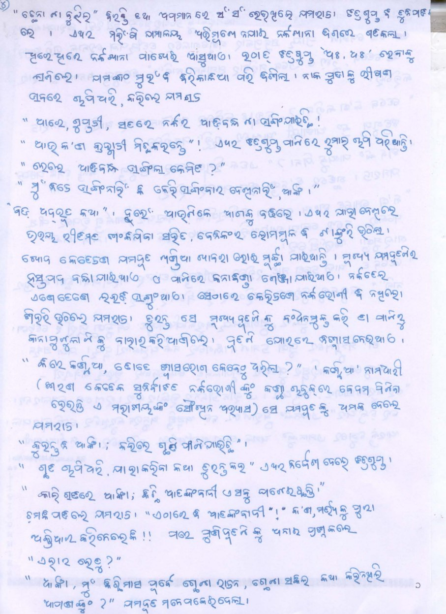

Gushan_kumar_nibedita.pdf · page 4
Static rendering from the preserved PDF; not an original website image.

Source: June2013Backup/OdiyaOrgNew/duradrusti/jan2007/dd5-1.zip :: old-original/Gushan_kumar_nibedita.pdf
Static rendering from the preserved PDF; not an original website image.

Source: June2013Backup/OdiyaOrgNew/duradrusti/jan2007/dd5-1.zip :: old-original/Gushan_kumar_nibedita.pdf